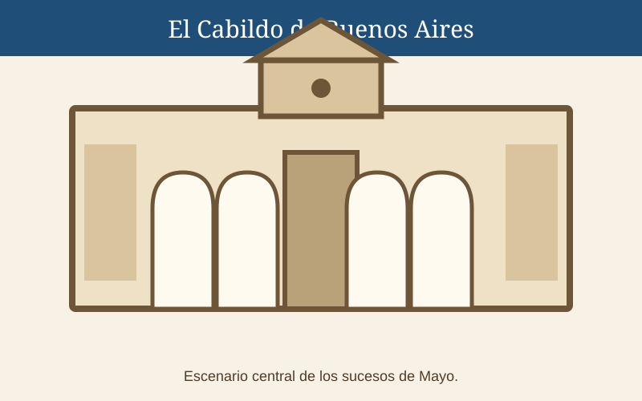
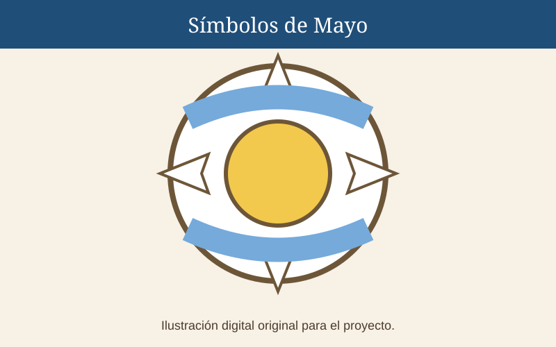
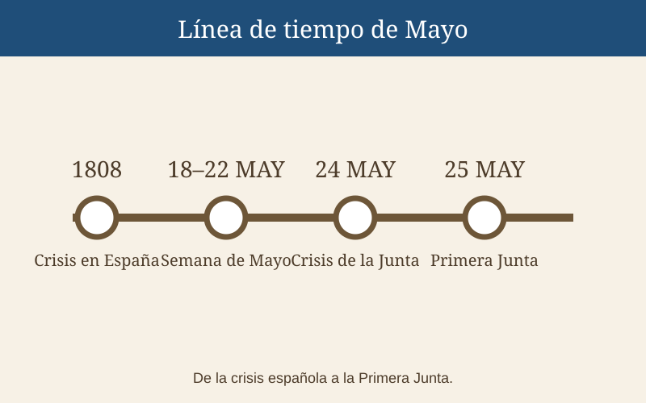

Cabildo de Buenos Aires
Fue el escenario institucional de los debates de mayo de 1810 y actualmente funciona como museo histórico.

Efemérides escolares de Argentina
Revolución de Mayo y Primer Gobierno Patrio
En esta sección el foco está puesto en los espacios físicos y los símbolos que ayudan a recordar la Revolución de Mayo. Así se puede entender la historia también a través del patrimonio.
Fue el escenario institucional de los debates de mayo de 1810 y actualmente funciona como museo histórico.

La plaza fue un espacio central de concentración y movilización durante los acontecimientos revolucionarios y continúa siendo un lugar emblemático de la vida pública argentina.

Se encuentra frente a la Plaza de Mayo y es hoy la sede del Poder Ejecutivo Nacional. Su entorno forma parte del conjunto histórico de la zona.

Durante el proceso revolucionario aparecieron y se consolidaron símbolos, emblemas y celebraciones que ayudaron a construir nuevas identidades políticas. El Museo Histórico Nacional señala, entre otros, la escarapela, la bandera, el gorro de la libertad y distintos elementos vinculados a la época.
El Museo Histórico Nacional del Cabildo y de la Revolución de Mayo explica que el Cabildo fue escenario de la Revolución de 1810 y hoy es un edificio emblemático para conocer ese proceso.
Visitar fuente oficial